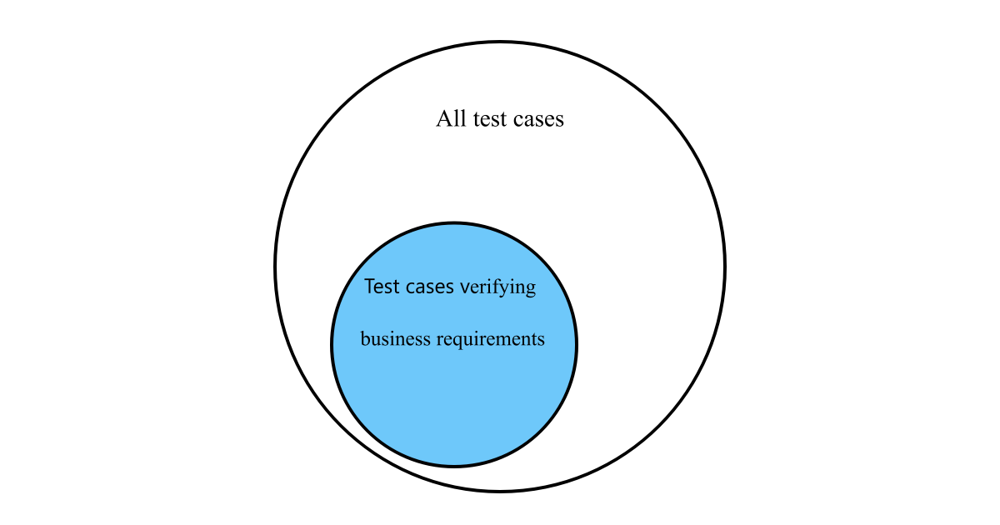

Understanding Requirements Based Unit Testing
Sun 21 January 2024Our team was unit testing business logic but it was difficult to maintain. The function originally had 4 inputs and 24 tests. A new requirement added 2 new inputs which led to 96 tests with the current testing strategy. The team wanted to improve the maintainability for future changes.
The function looked like below1 and due to the encoded business logic, the team had a reasonable expectation the function would continue adding inputs.
'''
domain of a, b, c, d, e = {0, 1}
domain of f = {0, .5, 1}
'''
def function_with_unmaintainable_tests(a, b, c, d, e):
if a == 1:
return 1
if b == 1:
return 1
if c == 1:
return 1
if d == 1:
return 1
if e == 1:
return 1
return generic_logic(f)
Due to the function's discrete input domain, the test clarified a tension between comprehensiveness and maintainability for me. The team originally used a comprehensive testing strategy5. A comprehensive testing strategy verifies the domain of all possible inputs. I've primarily used this approach for ideating unit tests in the past, leading to spending 10x the time on tests after implementing a change. That being said, comprehensive testing is a valid testing approach for many scenarios. It's useful for fixed utility functions or when an input domain has many discrete edge cases. For business logic the team expected to change, it burdened velocity3.
The team originally enumerated every possible case occurring in the system, but which subset of tests verified the important uses of the function?
To understand which tests are important, put the function in the business context2. I've heard the method called requirements based testing but this situation clarified the concept.
'''
domain of override 1-5 = {0, 1}
domain of permissions = {0, .5, 1}
'''
def authorize(override1, override2, override3, override4, override5, permissions):
if override1 == 1:
return 1
if override2 == 1:
return 1
if override3 == 1:
return 1
if override4 == 1:
return 1
if override5 == 1:
return 1
return authorization_logic(permissions)
With the function within the context of authorizing an entity, the business only cares when it overrides their permissions or applying the authorization_logic logic. Mapping to inputs and tests, the only tests we care about have these inputs.
(override1 = 1 XOR override2 = 1 XOR override3 = 1 XOR override4 = 1 XOR override5 = 1) AND authorization_logic() != 1which tests overrides4override1 = 0 AND override2 = 0 AND override3 = 0 AND override4 = 0 AND override5 = 0which tests the general authorization logic

Applying the requirements based testing strategy cut the total tests from 96 to 8. One can assert the existing unit tests would not catch a bug involving two interacting overrides returning 0. They'd be right! but thinking of the code needed to generate the situation, it's unlikely to happen without being caught in code review. For that small risk our team becomes more nimble. Any additional inputs would be a few test and I still have confidence the business use cases will work. For unit testing changing business logic, requirements based testing filters the domain of inputs to business critical inputs trading comprehensiveness for maintainability.
-
The function wasn't actually written in python and we had reasoning for the existing types and allowing values which were not important. The code base also has other discrete value input functions encoding business logic. Solving the maintainability problem would have implications across a large percentage of the code. ↩
-
Google doesn't actually have 5 overrides for authorization. I can't go into too much detail because the real business logic is confidential but I hope the summary gets the point across. ↩
-
A teammate maintained a script which generated all the permutations of the test to continue comprehensive testing. ↩
-
Because of the context of each override we know that the overrides will rarely interact. Thus XOR instead of OR. ↩
-
While writing this blog post, I realized that it's actually only a comprehensive correctness test strategy. We could have also verified the function ran under 1ms or it produced no side effects. We already filtered some tests implicitly deemed not important. ↩